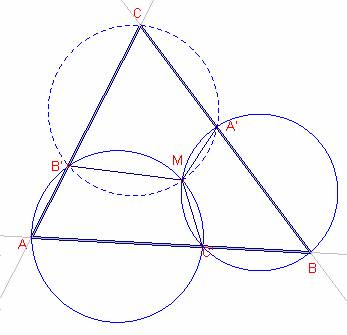
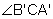

Problema 294
For a triángulo ABC and three points
A', B', and C', one on each of
its sides, the three Miquel circles are the circles passing through each polygon
vertex and its neighboring side points (i.e., AC'B', BA'C', and
CB'A'). According to Miquel's theorem,
the Miquel circles are concurrent in a point M known as the Miquel point
.Para un triángulo ABC
y tres puntos A', B', y C', uno en cada uno de sus lados ,
las tres circunferencias de Miquel son las que pasan por cada vértice y los
puntos sobre los lados correspondientes ( es decir, por AC'B',
BA'C', y C B'A'). De
acuerdo con el teorema de Miquel, las circunferencias de Miquel son
concurrentes en un punto M conocido como punto de Miquel.
Eric W. Weisstein. "Miquel Triángulo." From MathWorld--A Wolfram
Web Resource.
http://mathworld.wolfram.com/MiquelsTheorem.html
Solución Ricard Peiró:

Sea M la intersección de las circunferencias circunscritas
a los triángulos , .
El cuadrilátero AC’MB’ es cíclico, por el teorema de
Tolomeo, los ángulos opuestos del cuadrilátero son suplementarios, entonces,
El cuadrilátero BA’MC’ es cíclico, por el teorema de
Tolomeo, los ángulos opuestos del cuadrilátero son suplementarios, entonces,

Los ángulos  y el ángulo
y el ángulo  .
.
Nota: Si los puntos A’, B’, C’ pertenecen a la
prolongación de los lados el teorema de Miquel también se cumple y la
demostración es análoga.
Prueba con Cabri:
Figura barroso294.fig
Applet created on 1/02/06 by Ricard Peiró with
CabriJava